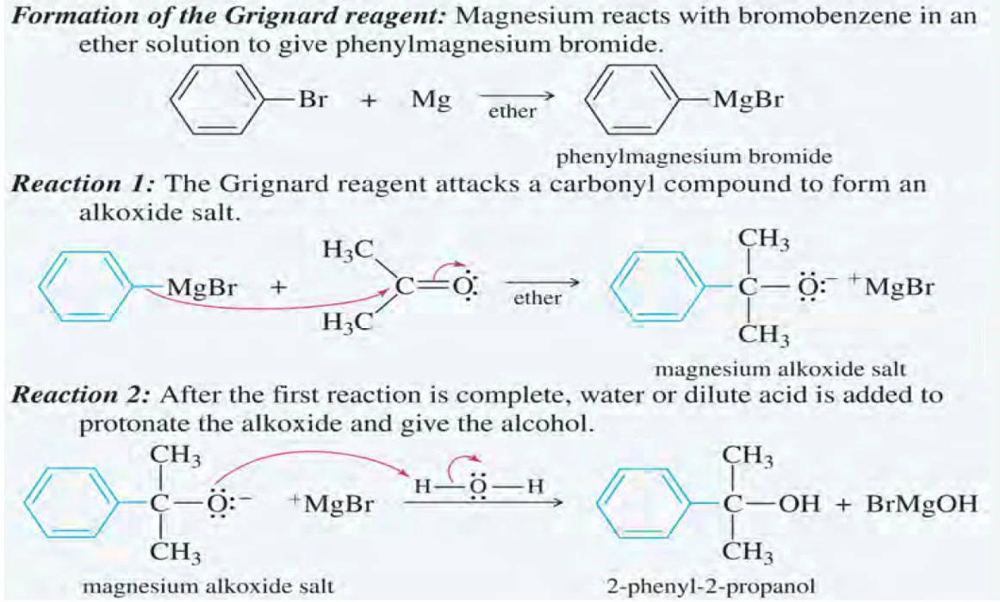
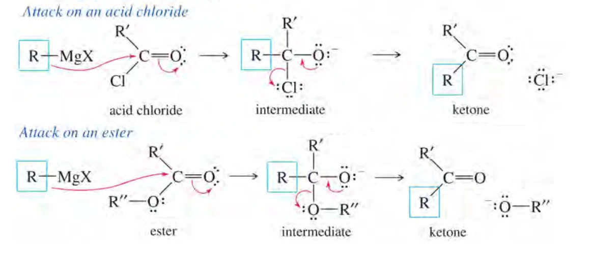
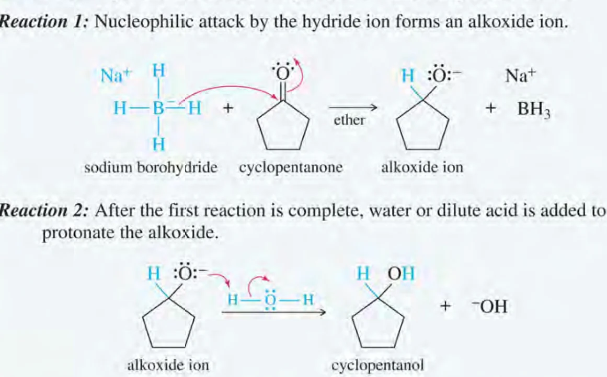

LECTURE 23 · 2026-11-17
醇Ⅱ：合成、羰基还原与硫醇
用有机金属试剂构建碳骨架，按官能团选择还原路线
23.1 · INDUSTRIAL ALCOHOLS
甲醇、乙醇和异丙醇的来源
甲醇早期由木材干馏获得，现代生产以合成气中的 CO、CO2 和 H2 为原料。限于 CO 路线，净式为 CO ＋ 2H2 ⇌ CH3OH。乙醇可由淀粉糖化后发酵，葡萄糖的净式为 C6H12O6 → 2CH3CH2OH ＋ 2CO2，也可由乙烯水合制备。丙烯按马氏方向水合形成异丙醇，乙烯双键两端等价，水合只有一种连接方式。
乙醇和水在常压下形成最低共沸物，乙醇质量分数约为 96%，其中气相和液相组成相同。因此常压精馏向共沸组成逼近。无水乙醇可用分子筛等方式进一步脱水。乙醇常作溶剂、燃料组分，异丙醇的水溶液可用于消毒，甲醇具有毒性。
来源：幻灯片 3–6
23.2 · REACTIONS ALREADY AVAILABLE
已学反应怎样选择
若目标只需把卤素换成 OH，可以考虑低位阻卤代烷的 SN2。随底物位阻和碱性增加，消除竞争增强。烯烃水合时先看目标 OH 在哪一个原双键碳上。酸催化水合和羟汞化—脱汞化通常给马氏连接，前者可能有碳正离子重排。硼氢化—氧化通常使 OH 落到较少取代的碳，净 H 与 OH 同面加入。
邻二醇的合成需先决定相对构型。OsO4 等导致同面双羟基化，环氧化后开环给异面二羟基化。若目标需要新造 C–C 键，可改用炔基负离子、格氏试剂或有机锂加成羰基。若骨架已经齐全，只需把 C=O 变成 CH–OH，则还原更直接。
来源：幻灯片 7–9
23.3 · ORGANOMETALLIC REAGENTS
格氏试剂与有机锂的成键逻辑
C–Mg、C–Li 键中电子偏向碳，形式上可用 R− 的反应性理解。普通格氏试剂写作 RMgX，由合适卤代物与 Mg 在配位醚溶剂中生成；有机锂写作 RLi，由合适的有机卤化物与 Li 反应可制备。溶液中实际物种可聚集、溶剂化，反应式里的 R− 是追踪电子的形式表示。普通卤代烷制格氏试剂的反应性常见 I、Br、Cl 依次下降，氟化物通常很难用。部分有机锂可在烃类介质中制备和使用。烷基之外，烯基、芳基等也能在合适条件下作为待转移的 R 基。
羰基氧可与 Mg 配位，R 进攻羰基碳，C=O 的 π 电子到氧上，得到烷氧盐。反应完成后再水解或酸化，O− 得到质子。反应前若有水、醇、羧酸、某些 N–H 或端炔氢，试剂可先被质子化为 RH。卤代烷制试剂后再水解，形式上便是把 C–X 换为 C–H 的还原。含酸性质子的底物须考虑保护或换路线。

来源：幻灯片 10–14、24–25
23.4 · CARBONYL DISCONNECTION
甲醛、醛和酮决定醇的级数
甲醛羰基碳自带两个 H，加入一个 R 得 RCH2OH，碳链相对 R 增加一个碳。其他醛自带一个 R′ 和一个 H，加成后给 R′CH(OH)R。酮已有两个碳取代基，加入第三个碳片段得到叔醇。如果新羟基碳的四个基团互异，须考虑羰基两面的进攻。在非手性环境由无手性原料生成一对对映体时，通常得到外消旋产物。
逆推叔醇时，列出带 OH 的碳与三个碳片段之间的可能断键，每次选一个片段由 RMgX 提供，保留的两段组成酮。目标羟基碳带环戊基、甲基和乙基时，三种断法都可画出。如果原料限定每种至多五个碳，环戊基卤与丁-2-酮符合限制，含环戊基的另两个酮需要先从小片段构建。这个检查也适用于含其他活泼官能团的目标。
来源：幻灯片 15–18
23.5 · ACYL DERIVATIVES
酰氯和酯为何常消耗两个当量
酰氯和酯的羰基碳还连着可离去的基团。第一次亲核加成生成四面体中间体，氧的孤对回落重新形成 C=O，Cl− 或 OR′− 离去，得到酮。酮接着与第二当量试剂加成，再经质子化得到醇。普通酰基酯或酰氯最终产物通常带两个相同的试剂来源 R 基和原酰基残基。甲酸衍生物的原酰基残基是 H，对应仲醇。

例如乙酸甲酯与过量 PhMgBr 可给 Ph2C(OH)CH3。酯的甲氧基随离去基离开。若目标醇中心没有两个相同片段，优先考虑酮加成等路线。只加一当量普通格氏试剂时，新生成酮仍会与剩余试剂竞争，常得到混合物。
来源：幻灯片 19–21
23.6 · EPOXIDE OPENING
环氧乙烷让碳链增加两个碳
环氧乙烷是一种有环张力的醚。R 进攻环上的一个碳，C–O 键断裂，氧留在另一个碳上，最后得到 R–CH2–CH2OH。环氧乙烷两端等价，产物为伯醇。逆推目标时，从 OH 起数两个碳，再断其与其余 R 片段的键。比较甲醛和环氧乙烷就能快速识别需要延长的是一碳还是二碳。
来源：幻灯片 22–23
23.7 · HYDRIDE REDUCTION
氢化物还原羰基
NaBH4 或 LiAlH4 用 B–H、Al–H 键向羰基碳转移氢化物。羰基氧接受 π 电子形成烷氧配合物，经过质子化得到醇。醛还原为伯醇，酮还原为仲醇，甲醛得到甲醇。碳数保持不变。画箭头时从供氢键指向羰基碳，同时把 C=O π 电子移向 O。

NaBH4 常用于还原醛、酮，可在合适的质子溶剂中使用，通常保留普通酯和孤立 C=C。LiAlH4 还原范围更广，可将许多羧酸和酯还原为伯醇，反应阶段使用干燥的醚性条件，随后分步后处理。酯 RCOOR′ 完全还原时，羰基一端变为 RCH2OH，原烷氧部分经质子化为 R′OH。
带两个酮羰基和一个甲酯的例子，将两处酮变成 OH 而保留酯时用 NaBH4。如果三处都要还原，LiAlH4 可把两个环酮变成环上羟基，并把甲酯变成羟甲基。画产物后要保留原来的酯羰基碳，同时检查环上是否由加成形成新的立体中心。
来源：幻灯片 26–33
23.8 · CATALYTIC HYDROGENATION
催化氢化与官能团选择性
醛或酮也可在合适金属催化剂上加氢。氢在金属表面活化，底物吸附并接受氢。课件用含孤立双键的醛展示选择试剂的意义。Raney Ni 催化氢化在所示条件下同时还原 C=C 和醛基，得到饱和伯醇。NaBH4 可主要还原同一底物的醛基而保留 C=C，得到不饱和伯醇。选择性随催化剂、官能团和条件变化。
来源：幻灯片 34–38
23.9 · THIOLS AND DISULFIDES
硫醇的成键和氧化
硫醇 RSH 的气味常很强，少量硫醇可作燃气加臭剂。硫比氧更易极化，许多硫醇水中 pKa 约 10–11，比简单醇更酸，生成的 RS− 是有效亲核体。NaSH 可对低位阻卤代烷作 SN2 生成 RSH。若产物被进一步去质子化并再次烷基化，可能形成硫醚 RSR′。
温和氧化可把两个 RSH 连成 R–S–S–R，每形成一个二硫键时净失去两个质子与两个电子。还原可以重新得到硫醇，蛋白质中两个半胱氨酸侧链也可形成二硫键。更强氧化可继续生成磺酸 RSO3H，氧化过程中硫与碳的连接仍可保留。
来源：幻灯片 39–42
23.10 · SYNTHESIS PRACTICE
给定醇结构时怎样倒推
先给目标标上 OH 所在碳，再数这一碳与几个碳相连。伯醇可由醛还原，也可从 R 片段加甲醛或环氧乙烷制备，三条路线形成的碳骨架关系不同。仲醇可由酮还原或格氏试剂加成醛。叔醇需在目标中心构建合适 C–C 键，通常用试剂加成酮，有两个相同取代基时可检查酯路线。甲酸酯的原酰基端带 H，可用于制备含两个相同取代基的仲醇。
将庚-1-醇逆推为庚醛，将庚-2-醇逆推为庚-2-酮。由 2-甲基丁-3-烯-2-醇逆推时，先看羟基碳连接的两个甲基和一个烯基，可断开羟基碳与烯基的键得到丙酮和对应烯基格氏试剂。选定路线后核对试剂兼容性、酸性基团和羰基选择性。
来源：幻灯片 43–44
来源：Org. Chem. Lect. 23 (chapter 10-2).ppt（共 44 页）